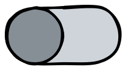

Bienvenue sur Instakilo Joindre le chat
Nom d'utilisateur
Joindre
Informations
Instakilo
Quitter

QUE SE PASSE-T-IL ?
Connexion (vous êtes connecté) :
Vous êtes connecté au serveur ! Votre ordinateur écoute dans le tuyau qui le relie au serveur pour essayer d'entendre des messages.
Envoyer